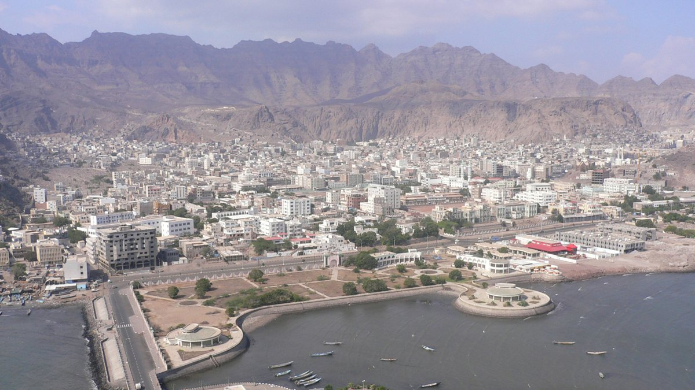

Des missiles houthis frappent le palais présidentiel à Aden et tuent cinq personnes
Cinq missiles balistiques ont frappé jeudi le complexe du palais d'al-Maashiq à Aden. Le ministre yéménite de la Santé a dit que cinq personnes ont été tuées et 16 blessées. Le Premier ministre Shaya al-Zindani et ses ministres sont indemnes.

Points clés
- Mis à jour à 05:14 UTC: Le ministre yéménite de la Santé, Qasim Buhaibeh, a dit que le bilan de l'attaque contre le palais est désormais de cinq morts et 16 blessés.
- Mis à jour à 20:54 UTC: Des sources militaires du gouvernement yéménite disent désormais qu'au moins quatre personnes ont été tuées et 10 blessées dans les frappes sur le palais al-Maashiq, a…
- ADEN.
Mis à jour à 05:14 UTC: Le ministre yéménite de la Santé, Qasim Buhaibeh, a dit que le bilan de l'attaque contre le palais est désormais de cinq morts et 16 blessés. Les victimes comptaient des agents de sécurité qui gardaient le site et des employés civils qui travaillaient dans le complexe, et CNN a rapporté que deux des morts étaient membres de l'équipe de sécurité du Premier ministre. Le Premier ministre Shaya al-Zindani a condamné l'attaque et a dit que le gouvernement continuerait à exercer ses fonctions et à combattre les Houthis sur la côte de la mer Rouge et sur d'autres fronts. Les Houthis ont dit avoir visé ce qu'ils ont décrit comme un quartier général d'opérations militaires saoudien dans le complexe du palais. La frappe a été l'une des attaques les plus marquantes contre le gouvernement depuis le lancement, au début du mois, de sa campagne Aube du Yémen, a rapporté CNN.
Mis à jour à 20:54 UTC: Des sources militaires du gouvernement yéménite disent désormais qu'au moins quatre personnes ont été tuées et 10 blessées dans les frappes sur le palais al-Maashiq, a rapporté l'Agence France-Presse. Un journaliste de l'AFP à Aden a vu de la fumée au-dessus du complexe et des habitants ont raconté des explosions dans toute la ville. Le premier bilan donné par des responsables du gouvernement, deux gardes tués et six blessés, avait été rapporté par Reuters et l'Associated Press. Les sources militaires ont donné le bilan plus élevé plus tard, jeudi 15 octobre. L'Arabie saoudite a accusé l'Iran d'encourager l'escalade et a dit rester en contact avec Téhéran. Les Houthis ont aussi tiré plusieurs missiles balistiques sur Marib, dans le centre pétrolier du pays, selon les forces du gouvernement yéménite.
ADEN. Cinq missiles balistiques houthis ont frappé le complexe du palais présidentiel d'al-Maashiq à Aden le jeudi Oct 15, 2026, tuant deux gardes de sécurité et blessant d'autres personnes, ont dit des responsables yéménites. Le Premier ministre Shaya al-Zindani et les membres du cabinet présents dans le complexe n'ont pas été blessés.
Des témoins ont entendu au moins six explosions près du palais, a rapporté l'Associated Press, et des habitants ont fui le secteur en panique. Un responsable de la sécurité a dit à l'AP qu'au moins deux explosions avaient touché la colline près du palais et deux autres près de son portail de sécurité. Le gouvernement a dit que l'attaque avait utilisé des missiles et des drones.
Le ministre de l'Information, Moammar al-Eryani, a dit à la BBC que le Premier ministre et les autres ministres étaient indemnes quand les cinq missiles ont frappé le palais, mais que beaucoup d'autres personnes avaient été blessées. Le ministère de l'Information du gouvernement a dit dans un communiqué que le Premier ministre et les membres du gouvernement étaient sains et saufs après l'attaque contre le palais à Aden, la capitale intérimaire.
La revendication houthie
Les Houthis ont revendiqué l'attaque aussitôt. L'agence de presse Saba, contrôlée par les Houthis, citant un responsable militaire, a dit que le groupe avait frappé un quartier général d'opérations militaires dirigé par des officiers saoudiens dans le complexe, ainsi que des dépôts d'armes. Le porte-parole militaire Yahya Saree a dit que la frappe faisait partie d'une politique déclarée qui vise les concentrations militaires saoudiennes où qu'elles se trouvent.
Reuters a dit ne pas pouvoir vérifier de façon indépendante les affirmations houthies sur ce qui se trouvait dans le complexe. Le gouvernement yéménite n'a pas donné de détail rapide sur le type de missiles utilisés ni sur l'ampleur complète des dégâts, a rapporté CNN.
Aden est le siège du gouvernement du Yémen reconnu par la communauté internationale, que l'Arabie saoudite soutient. Une coalition menée par l'Arabie saoudite apporte un soutien aérien aux forces progouvernementales qui combattent les Houthis, soutenus par l'Iran, a rapporté la BBC.
Une semaine d'attaques contre l'Arabie saoudite
La frappe contre le palais est arrivée au milieu d'une escalade plus large. La coalition menée par l'Arabie saoudite a dit jeudi que les Houthis avaient tenté d'attaquer des dizaines d'aéroports, de ports et d'installations pétrolières saoudiens. Le porte-parole de la coalition, Turki al-Maliki, a dit que les attaques houthies contre l'aéroport international Roi Khalid à Riyad ce mois-ci avaient tué 17 personnes et blessé 333 autres, et que les attaques contre l'aéroport d'Abha, dans le sud-ouest près de la frontière yéménite, avaient tué trois personnes et blessé 28 autres.
Les Houthis tirent des missiles balistiques et des drones sur des sites saoudiens depuis une semaine, en réponse au soutien saoudien aux forces gouvernementales dans la guerre civile yéménite relancée. Le mercredi Oct 14, le groupe a promis de poursuivre ses attaques contre les aéroports et les sites pétroliers saoudiens et a dit avoir frappé le siège de Saudi Aramco à Dhahran la veille. Le ministère saoudien de l'Énergie a dit que cette attaque avait causé un incendie limité et aucun blessé.
L'AP a dit que l'attaque d'Aden était une frappe rare contre le secteur du palais, et que l'escalade a compliqué les efforts pour mettre fin à la guerre plus large avec l'Iran et secoué les marchés, alors que l'Arabie saoudite, l'un des plus grands exportateurs de pétrole au monde, fait face à des attaques répétées. Pour Aden, une ville qui vit avec la guerre depuis des années, jeudi a vu les combats arriver au siège même du gouvernement.
Chronologie
- Oct 14, 2026Les Houthis promettent de poursuivre leurs attaques contre les aéroports et les installations pétrolières saoudiens et disent avoir frappé le siège de Saudi Aramco à Dhahran la veille.
- Oct 15, 2026Cinq missiles balistiques houthis frappent le complexe du palais présidentiel al-Maashiq à Aden. Cinq personnes sont tuées et 16 blessées, dit le ministre yéménite de la Santé, et le Premier ministre Shaya al-Zindani et ses ministres sont indemnes.
- Oct 15, 2026La coalition menée par l'Arabie saoudite dit que les Houthis ont tenté d'attaquer des dizaines d'aéroports, de ports et d'installations pétrolières saoudiens alors que les combats s'étendent.
Sources
- Reuters: Houthis fire missiles at presidential palace in Yemen's Aden, officials say
- CNN: Iran-aligned Houthis target Yemeni presidential palace, prime minister remains unharmed
- Reuters: Saudi-led coalition says Houthis attempted to attack dozens of Saudi facilities
- AP via WCIA: At least 6 explosions heard near Yemen government-used palace in Aden, witnesses say
- Agence France-Presse: Houthis launch deadly attack on presidential palace in Aden (toll update)
- CNN: Iran-aligned Houthis launch deadly attack on Yemeni presidential palace in escalating campaign against Saudi Arabia
- BBC: Houthi missile attack on Yemeni presidential palace kills five, minister says